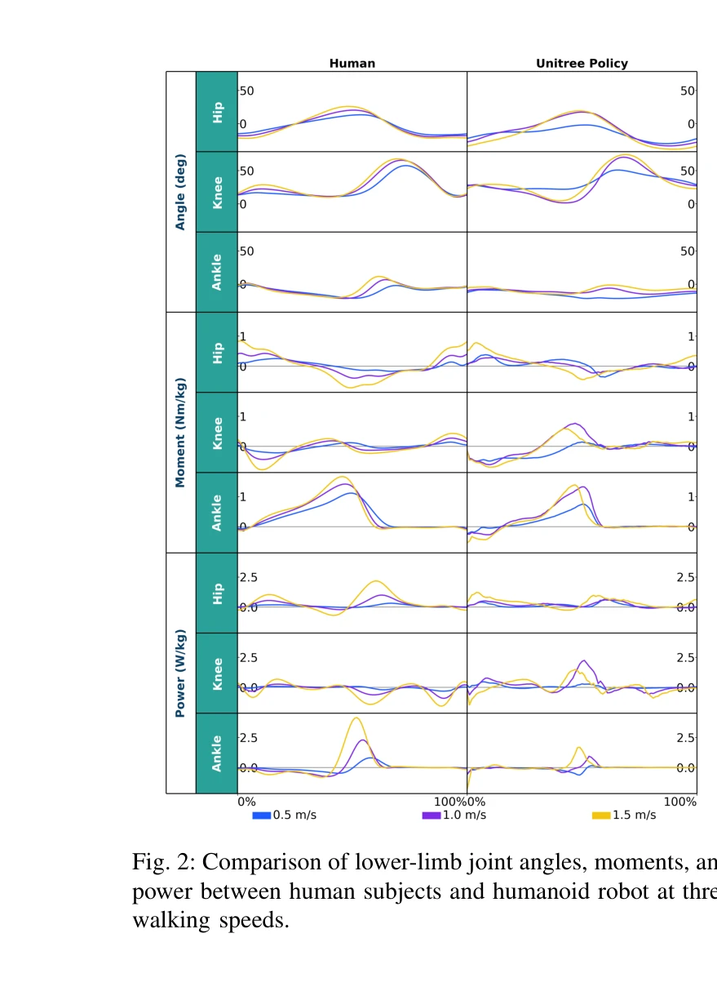
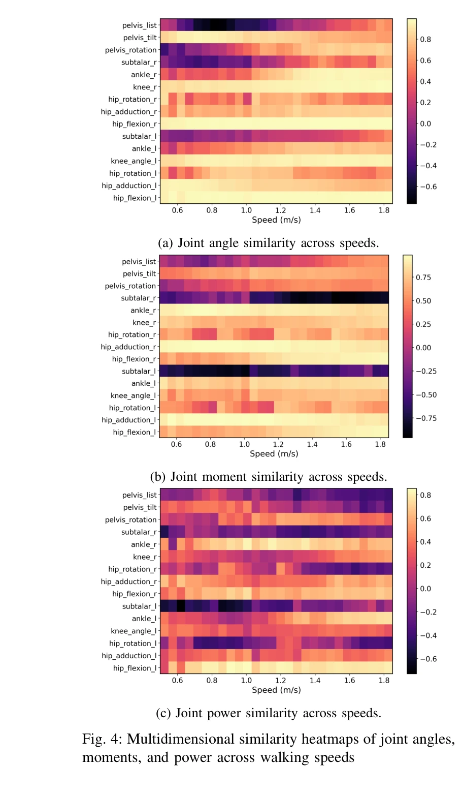
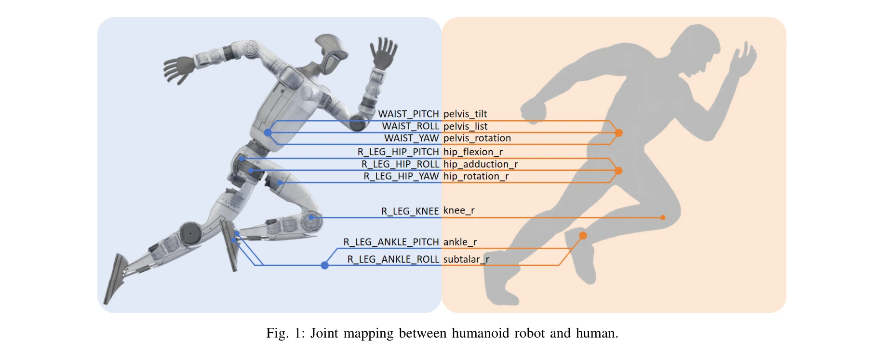

저자: Luying Feng, Yaochu Jin, Hanze Hu, Wei Chen | 날짜: 2026-02-25 | URL: https://arxiv.org/abs/2602.21666

Fig. 2: Comparison of lower-limb joint angles, moments, and
본 논문은 Gait Divergence Analysis Framework (GDAF)를 제안하여 인간과 휴머노이드 로봇의 보행 간 생체역학적 차이를 정량적으로 분석하고, 28개 속도에서 수집한 공개 데이터셋과 분석 도구를 제공한다.

Fig. 4: Multidimensional similarity heatmaps of joint angles,

Fig. 1: Joint mapping between humanoid robot and human.
총평: 본 논문은 휴머노이드 보행 평가를 위한 첫 번째 체계적 생체역학 분석 프레임워크와 완전 공개 데이터셋을 제시하여 로봇 보행 개선의 정량적 기준과 도구를 확보하게 하는 점에서 의의가 크며, 방법론적 투명성과 재현가능성이 우수하나 단일 플랫폼과 보행 환경 제약이 일반화 가능성을 다소 제한한다.